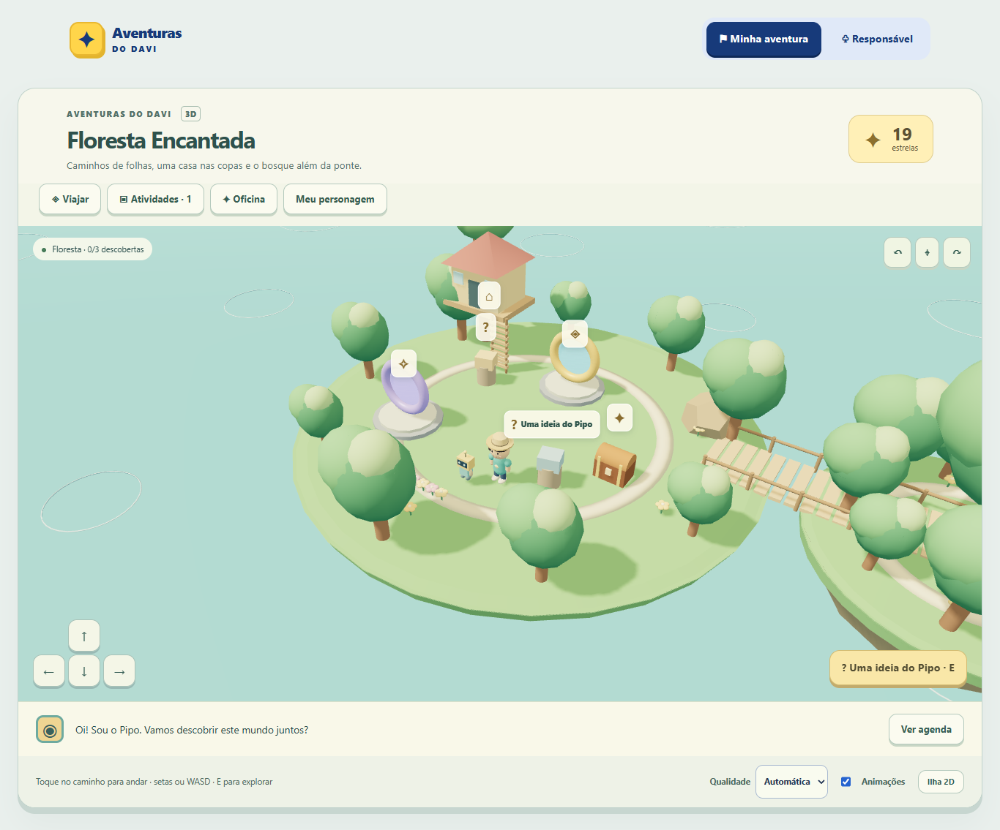
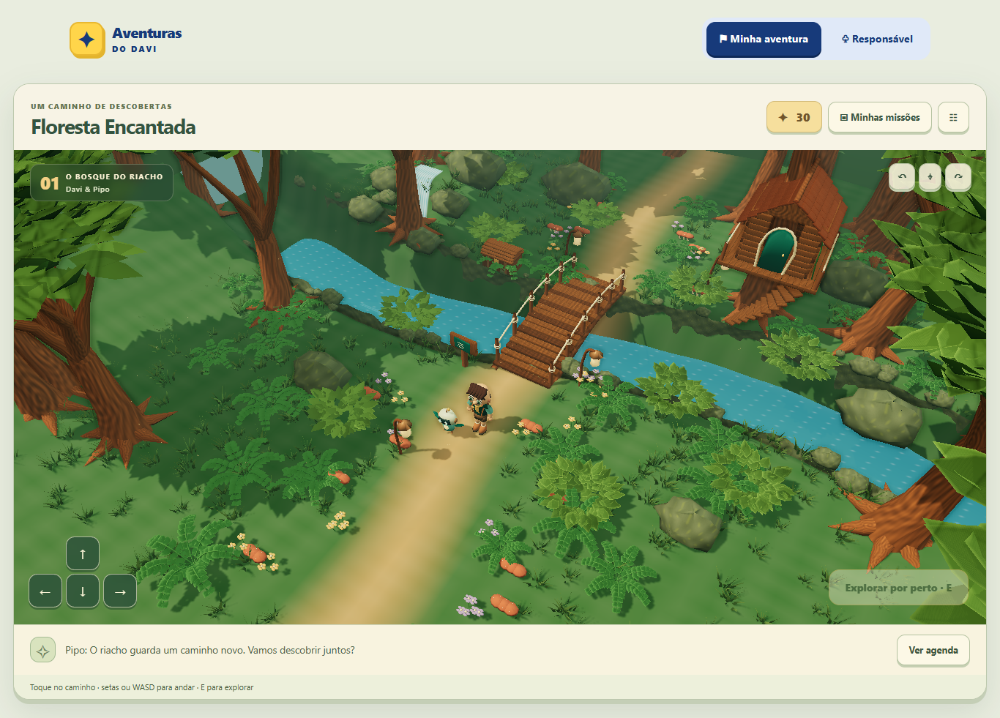
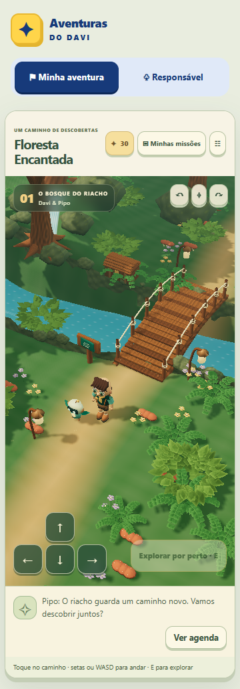
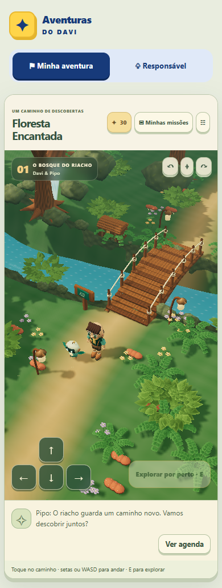
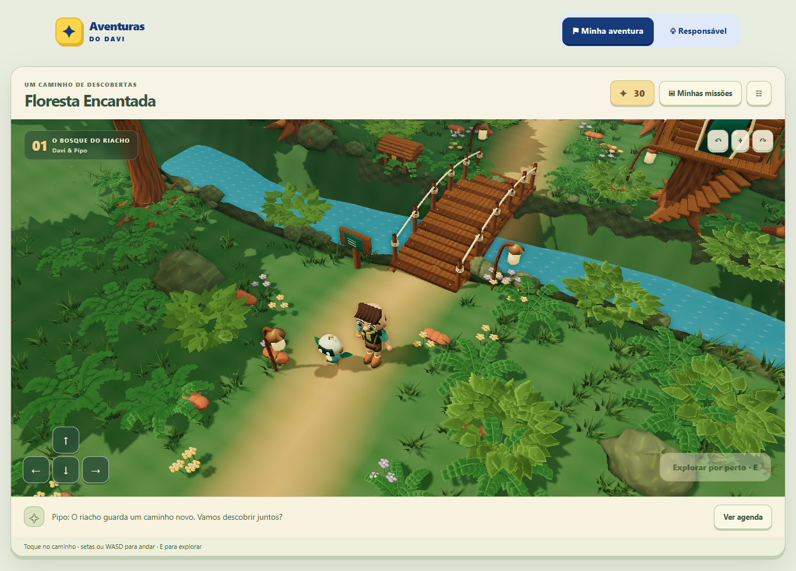
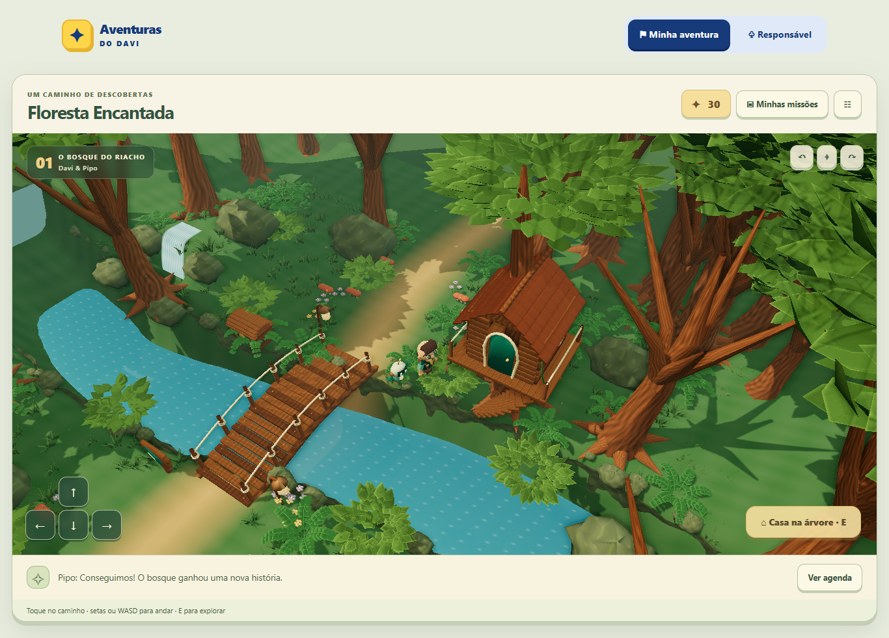

AVENTURAS DO DAVI · ISSUE #16 · REVISÃO ARTÍSTICA
Um bosque para descobrir com Davi e Pipo
Marco visual de um único mundo. A aprovação é pela experiência e pelo acabamento; não pela quantidade de funcionalidades.

Anterior — PR #15, não aprovada visualmente
Proposta — GLBs autorais, cenário, materiais e personagensGameplay real
Gravação contínua com dados sintéticos: caminhar, entrar e sair de missão, construir e atravessar a ponte, construir a casa. Sem merge ou deploy.
Mobile

360 px
390 pxPersonagens e construção

Davi e Pipo — modelos e animações próprios
Casa desbloqueadaTestes, autoria, medições e limites · Resultados registrados